pyvista.Property#
- class Property(theme=None, interpolation=None, color=None, style=None, metallic=None, roughness=None, point_size=None, opacity=None, ambient=None, diffuse=None, specular=None, specular_power=None, show_edges=None, edge_color=None, render_points_as_spheres=None, render_lines_as_tubes=None, lighting=None, line_width=None, culling=None)[source]#
Wrap vtkProperty and expose it pythonically.
This class is used to set the property of actors.
- Parameters:
- theme
pyvista.themes.DefaultTheme,optional Plot-specific theme.
- interpolation
str,optional Set the method of shading. One of the following:
'Physically based rendering'- Physically based rendering.'pbr'- Alias for Physically based rendering.'Phong'- Phong shading.'Gouraud'- Gouraud shading.'Flat'- Flat Shading.
This parameter is case insensitive.
- color
color_like,optional Used to make the entire mesh have a single solid color. Either a string, RGB list, or hex color string. For example:
color='white',color='w',color=[1.0, 1.0, 1.0], orcolor='#FFFFFF'. Color will be overridden if scalars are specified.- style
str,optional Visualization style of the mesh. One of the following:
style='surface',style='wireframe',style='points'. Defaults to'surface'. Note that'wireframe'only shows a wireframe of the outer geometry.- metallic
float,optional Usually this value is either 0 or 1 for a real material but any value in between is valid. This parameter is only used by PBR interpolation.
- roughness
float,optional This value has to be between 0 (glossy) and 1 (rough). A glossy material has reflections and a high specular part. This parameter is only used by PBR interpolation.
- point_size
float,optional Size of the points represented by this property.
- opacity
float,optional Opacity of the mesh. A single float value that will be applied globally opacity of the mesh and uniformly applied everywhere - should be between 0 and 1.
- ambient
float,optional When lighting is enabled, this is the amount of light in the range of 0 to 1 (default 0.0) that reaches the actor when not directed at the light source emitted from the viewer.
- diffuse
float,optional The diffuse lighting coefficient. Default 1.0.
- specular
float,optional The specular lighting coefficient. Default 0.0.
- specular_power
float,optional The specular power. Between 0.0 and 128.0.
- show_edgesbool,
optional Shows the edges. Does not apply to a wireframe representation.
- edge_color
color_like,optional The solid color to give the edges when
show_edges=True. Either a string, RGB list, or hex color string.- render_points_as_spheresbool,
optional Render points as spheres rather than dots.
- render_lines_as_tubesbool,
optional Show lines as thick tubes rather than flat lines. Control the width with
line_width.- lightingbool,
optional Enable or disable view direction lighting.
- line_width
float,optional Thickness of lines. Only valid for wireframe and surface representations.
- culling
str, bool,optional Does not render faces that are culled. This can be helpful for dense surface meshes, especially when edges are visible, but can cause flat meshes to be partially displayed. Defaults to
'none'. One of the following:"back"- Enable backface culling"front"- Enable frontface culling'none'- Disable both backface and frontface culling
- theme
Examples
Create a
pyvista.Actorand assign properties to it.>>> import pyvista as pv >>> actor = pv.Actor() >>> actor.prop = pv.Property( ... color='r', ... show_edges=True, ... interpolation='Physically based rendering', ... metallic=0.5, ... roughness=0.1 ... )
Visualize how the property would look when applied to a mesh.
>>> actor.prop.plot()
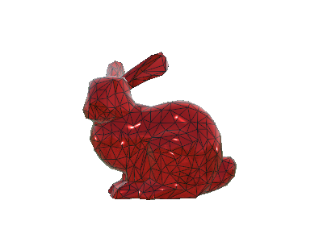 Set custom properties not directly available in
pyvista.Plotter.add_mesh(). Here, we set diffuse, ambient, and specular power and colors.>>> pl = pv.Plotter() >>> actor = pl.add_mesh(pv.Sphere()) >>> prop = actor.prop >>> prop.diffuse = 0.6 >>> prop.diffuse_color = 'w' >>> prop.ambient = 0.3 >>> prop.ambient_color = 'r' >>> prop.specular = 0.5 >>> prop.specular_color = 'b' >>> pl.show()
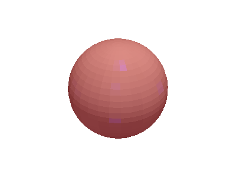 - property ambient: float#
Return or set ambient.
When lighting is enabled, this is the amount of light in the range of 0 to 1 (default 0.0) that reaches the actor when not directed at the light source emitted from the viewer.
Examples
>>> import pyvista as pv >>> prop = pv.Property() >>> prop.ambient = 0.2 >>> prop.ambient 0.2
Visualize default ambient light.
>>> prop.ambient = 0.0 >>> prop.plot()

Visualize ambient at
0.5.>>> prop.ambient = 0.5 >>> prop.plot()
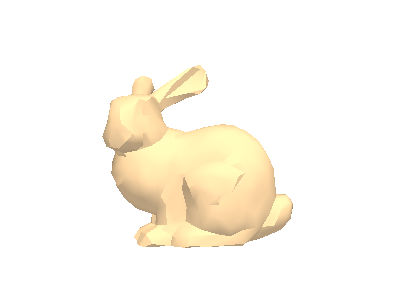 Visualize ambient at
1.0.>>> prop.ambient = 1.0 >>> prop.plot()
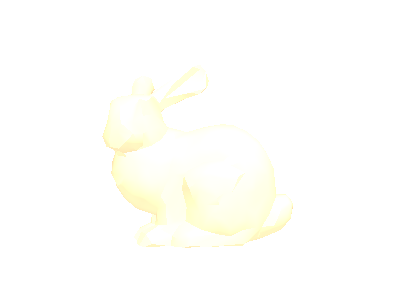
- property ambient_color: Color#
Return or set the ambient color of this property.
Either a string, RGB list, or hex color string. For example:
color='white',color='w',color=[1.0, 1.0, 1.0], orcolor='#FFFFFF'. Color will be overridden if scalars are specified.Examples
Set the ambient color to blue.
>>> import pyvista as pv >>> prop = pv.Property() >>> prop.ambient_color = 'b' >>> prop.ambient_color Color(name='blue', hex='#0000ffff')
Visualize setting the ambient color to blue with
ambient = 0.1>>> prop.ambient = 0.1 >>> prop.ambient_color = 'b' >>> prop.plot()
- property anisotropy#
Return or set the anisotropy coefficient.
This value controls the anisotropy of the material (0.0 means isotropic). This requires physically based rendering.
For further details see PBR Journey Part 2 : Anisotropy model with VTK
Notes
This attribute requires VTK v9.1.0 or newer.
Examples
Set anisotropy to 0.1
>>> import pyvista as pv >>> prop = pv.Property() >>> prop.interpolation = 'pbr' # requires physically based rendering >>> prop.anisotropy 0.1
- property color: Color#
Return or set the color of this property.
Either a string, RGB list, or hex color string. For example:
color='white',color='w',color=[1.0, 1.0, 1.0], orcolor='#FFFFFF'. Color will be overridden if scalars are specified.Examples
Set the color to blue.
>>> import pyvista as pv >>> prop = pv.Property() >>> prop.color = 'b' >>> prop.color Color(name='blue', hex='#0000ffff')
Visualize setting the property to blue.
>>> prop.color = 'b' >>> prop.plot()
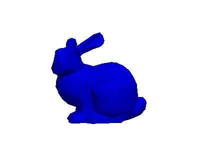 Visualize setting the color using an RGB value.
>>> prop.color = (0.5, 0.5, 0.1) >>> prop.plot()
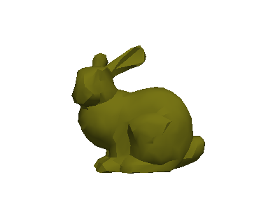
- copy() Property[source]#
Create a deep copy of this property.
- Returns:
pyvista.PropertyDeep copy of this property.
Examples
>>> import pyvista as pv >>> prop = pv.Property() >>> prop_copy = prop.copy()
- property culling: str#
Return or set face culling.
Does not render faces that are culled. This can be helpful for dense surface meshes, especially when edges are visible, but can cause flat meshes to be partially displayed. Defaults to
'none'. One of the following:"back"- Enable backface culling"front"- Enable frontface culling'none'- Disable both backface and frontface culling
Examples
Enable back face culling
>>> import pyvista as pv >>> prop = pv.Property() >>> prop.culling = 'back' >>> prop.culling 'back'
Plot default culling.
>>> prop.culling = 'none' >>> prop.plot()

Plot backface culling. This looks the same as the default culling
'none'because the forward facing faces are already obscuring the back faces.>>> prop.culling = 'back' >>> prop.plot()

Plot frontface culling. Here, the forward facing faces are hidden entirely.
>>> prop.culling = 'front' >>> prop.plot()
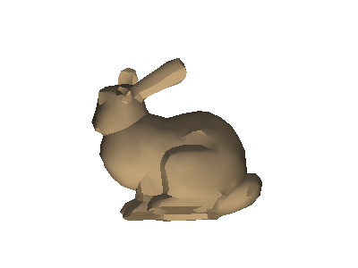
- property diffuse: float#
Return or set the diffuse lighting coefficient.
Default 1.0.
This is the scattering of light by reflection or transmission. Diffuse reflection results when light strikes an irregular surface such as a frosted window or the surface of a frosted or coated light bulb.
Examples
>>> import pyvista as pv >>> prop = pv.Property() >>> prop.diffuse = 0.2 >>> prop.diffuse 0.2
Visualize default diffuse light.
>>> prop.diffuse = 1.0 >>> prop.plot()

Visualize diffuse at
0.5.>>> prop.diffuse = 0.5 >>> prop.plot()
Visualize diffuse at
0.0.>>> prop.diffuse = 0.0 >>> prop.plot()
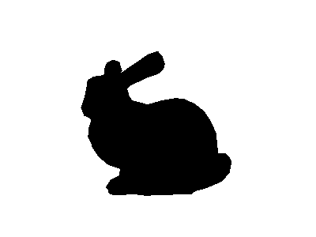
- property diffuse_color: Color#
Return or set the diffuse color of this property.
Either a string, RGB list, or hex color string. For example:
color='white',color='w',color=[1.0, 1.0, 1.0], orcolor='#FFFFFF'.Examples
Set the diffuse color to blue.
>>> import pyvista as pv >>> prop = pv.Property() >>> prop.diffuse_color = 'b' >>> prop.diffuse_color Color(name='blue', hex='#0000ffff')
Visualize setting the diffuse color to white with
diffuse = 0.5>>> prop.diffuse = 0.5 >>> prop.diffuse_color = 'w' >>> prop.plot()
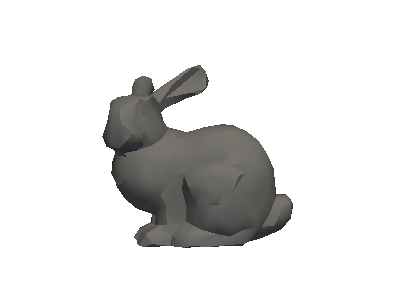
- property edge_color: Color#
Return or set the edge color of this property.
The solid color to give the edges when
show_edges=True. Either a string, RGB list, or hex color string.Examples
>>> import pyvista as pv >>> prop = pv.Property() >>> prop.edge_color = 'red' >>> prop.edge_color Color(name='red', hex='#ff0000ff')
Visualize red edges. Set the edge’s visibility to
Trueso we can see them.>>> prop.show_edges = True >>> prop.edge_color = 'red' >>> prop.plot()
- property interpolation: str#
Return or set the method of shading.
One of the following options.
'Physically based rendering'- Physically based rendering.'pbr'- Alias for Physically based rendering.'Phong'- Phong shading.'Gouraud'- Gouraud shading.'Flat'- Flat Shading.
This parameter is case insensitive.
Examples
Set interpolation to physically based rendering.
>>> import pyvista as pv >>> prop = pv.Property() >>> prop.interpolation = 'pbr' >>> prop.interpolation 'Physically based rendering'
Visualize default flat shading.
>>> prop.interpolation = 'Flat' >>> prop.plot()
Visualize gouraud shading.
>>> prop.interpolation = 'Gouraud' >>> prop.plot()

Visualize phong shading.
>>> prop.interpolation = 'Phong' >>> prop.plot()

Visualize physically based rendering.
>>> prop.interpolation = 'Physically based rendering' >>> prop.plot()

- property lighting: bool#
Return or set view direction lighting.
Examples
Disable lighting.
>>> import pyvista as pv >>> prop = pv.Property() >>> prop.lighting = False >>> prop.lighting False
Visualize it.
>>> prop.plot()
- property line_width: float#
Return or set the line width.
Examples
Change the line width to
10.>>> import pyvista as pv >>> prop = pv.Property() >>> prop.line_width = 10 >>> prop.line_width 10.0
Visualize the default line width.
>>> prop.line_width = 1.0 >>> prop.show_edges = True >>> prop.plot()
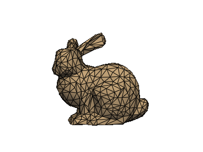 Visualize with a line width of 5.0
>>> prop.line_width = 5.0 >>> prop.plot()
- property metallic: float#
Return or set metallic.
This requires that the interpolation be set to
'Physically based rendering'Examples
Set metallic to 0.1
>>> import pyvista as pv >>> prop = pv.Property() >>> prop.interpolation = 'pbr' # requires physically based rendering >>> prop.metallic = 0.1 >>> prop.metallic 0.1
Visualize default metallic.
>>> prop.metallic = 0.0 >>> prop.plot()
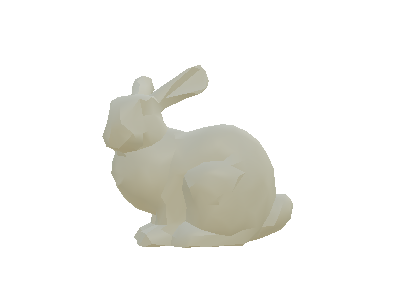 Visualize metallic at
0.5.>>> prop.metallic = 0.5 >>> prop.plot()
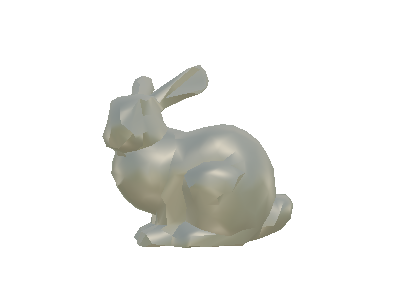 Visualize metallic at
1.0.>>> prop.metallic = 1.0 >>> prop.plot()
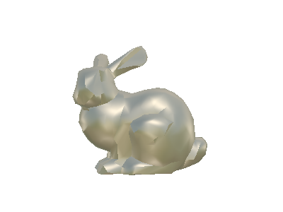
- property opacity: float#
Return or set the opacity of this property.
Opacity of the mesh. A single float value that will be applied globally opacity of the mesh and uniformly applied everywhere. Between 0 and 1.
Examples
Set opacity to
0.5.>>> import pyvista as pv >>> prop = pv.Property() >>> prop.opacity = 0.5 >>> prop.opacity 0.5
Visualize default opacity of
1.0.>>> prop.opacity = 1.0 >>> prop.plot()

Visualize opacity of
0.75.>>> prop.opacity = 0.75 >>> prop.plot()
Visualize opacity of
0.25.>>> prop.opacity = 0.25 >>> prop.plot()
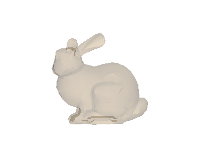
- plot(**kwargs) None[source]#
Plot this property on the Stanford Bunny.
This is useful for visualizing how this property would be applied to an actor.
- Parameters:
- **kwargs
dict,optional Keyword arguments for
pyvista.Plotter.
- **kwargs
Examples
>>> import pyvista as pv >>> prop = pv.Property( ... show_edges=True, ... color='brown', ... edge_color='blue', ... line_width=4, ... specular=1.0 ... ) >>> prop.plot()
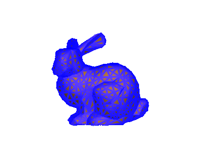
- property point_size#
Return or set the point size.
Examples
Change the point size to
10.0.>>> import pyvista as pv >>> prop = pv.Property() >>> prop.point_size = 10 >>> prop.point_size 10.0
Visualize a point size of
5.0.>>> prop.point_size = 5.0 >>> prop.style = 'points' >>> prop.plot()
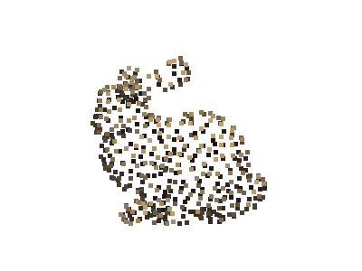 Visualize the a point size of
10.0.>>> prop.point_size = 10.0 >>> prop.plot()
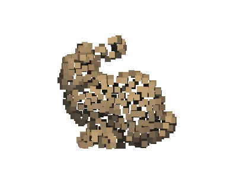
- property render_lines_as_tubes: bool#
Return or set rendering lines as tubes.
Requires representation style be set to
'wireframe'.Examples
Enable rendering lines as tubes.
>>> import pyvista as pv >>> prop = pv.Property() >>> prop.style = 'wireframe' >>> prop.line_width = 10 >>> prop.render_lines_as_tubes = True >>> prop.render_lines_as_tubes True
Visualize default line rendering.
>>> prop.render_lines_as_tubes = False >>> prop.plot()
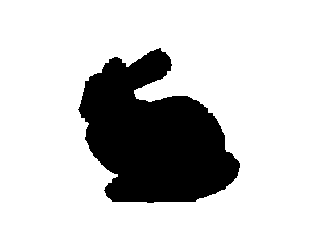 Visualize rendering lines as tubes
>>> prop.render_lines_as_tubes = True >>> prop.plot()
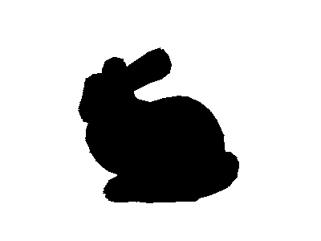
- property render_points_as_spheres: bool#
Return or set rendering points as spheres.
Requires representation style be set to
'points'.Examples
Enable rendering points as spheres
>>> import pyvista as pv >>> prop = pv.Property() >>> prop.style = 'points' >>> prop.point_size = 20 >>> prop.render_points_as_spheres = True >>> prop.render_points_as_spheres True
Visualize default point rendering.
>>> prop.render_points_as_spheres = False >>> prop.plot()
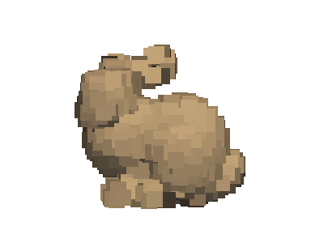 Visualize rendering points as spheres.
>>> prop.render_points_as_spheres = True >>> prop.plot()
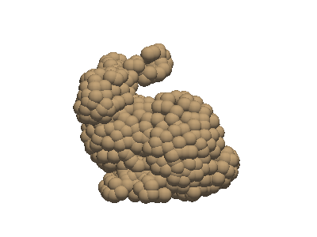
- property roughness: float#
Return or set roughness.
This requires that the interpolation be set to
'Physically based rendering'Examples
Set roughness to 0.1
>>> import pyvista as pv >>> prop = pv.Property() >>> prop.interpolation = 'pbr' # requires physically based rendering >>> prop.metallic = 0.5 # helps to visualize metallic >>> prop.roughness = 0.1 >>> prop.roughness 0.1
Visualize default roughness with metallic of
0.5.>>> prop.roughness = 0.5 >>> prop.plot()

Visualize roughness at
0.0with metallic of0.5.>>> prop.roughness = 0.0 >>> prop.plot()
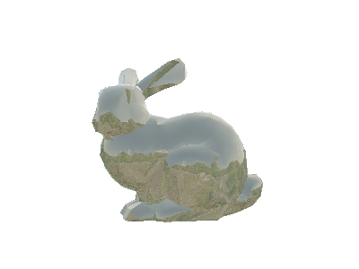 Visualize roughness at
1.0with metallic of0.5.>>> prop.roughness = 1.0 >>> prop.plot()
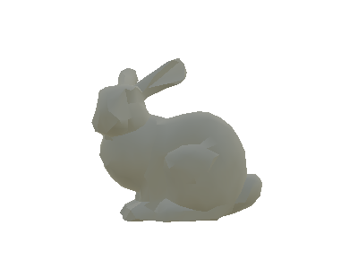
- property show_edges: bool#
Return or set the visibility of edges.
Shows or hides the edges. Does not apply to a wireframe representation.
Examples
>>> import pyvista as pv >>> prop = pv.Property() >>> prop.show_edges = True >>> prop.show_edges True
Visualize default edge visibility of
False.>>> prop.show_edges = False >>> prop.plot()
Visualize edge visibility of
True.>>> prop.show_edges = True >>> prop.plot()

- property specular: float#
Return or set specular.
Default 0.0
Specular lighting simulates the bright spot of a light that appears on shiny objects.
Examples
>>> import pyvista as pv >>> prop = pv.Property() >>> prop.specular = 0.2 >>> prop.specular 0.2
Visualize default specular light.
>>> prop.specular = 0.0 >>> prop.plot()

Visualize specular at
0.5.>>> prop.specular = 0.5 >>> prop.plot()
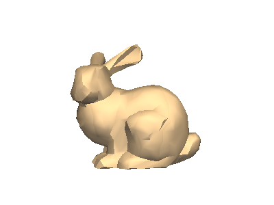 Visualize specular at
1.0.>>> prop.specular = 1.0 >>> prop.plot()
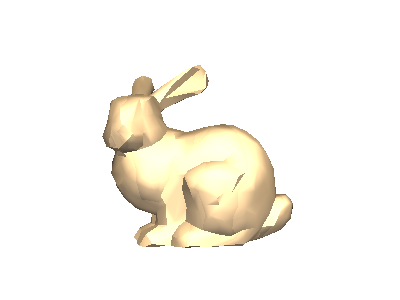
- property specular_color: Color#
Return or set the specular color of this property.
Either a string, RGB list, or hex color string. For example:
color='white',color='w',color=[1.0, 1.0, 1.0], orcolor='#FFFFFF'.Examples
Set the specular color to blue.
>>> import pyvista as pv >>> prop = pv.Property() >>> prop.specular_color = 'b' >>> prop.specular_color Color(name='blue', hex='#0000ffff')
Visualize setting the specular color to blue with
specular = 0.2>>> prop.specular = 0.2 >>> prop.specular_color = 'r' >>> prop.plot()

- property specular_power: float#
Return or set specular power.
The specular power. Between 0.0 and 128.0. Default 1.0
Examples
Set specular power to 5.0
>>> import pyvista as pv >>> prop = pv.Property() >>> prop.specular = 0.1 # enable specular >>> prop.specular_power = 5.0 >>> prop.specular_power 5.0
Visualize default specular power.
>>> prop.specular_power = 1.0 >>> prop.plot()
Visualize specular power at
0.1.>>> prop.specular_power = 0.1 >>> prop.plot()
Visualize specular power at
5.0.>>> prop.specular_power = 5.0 >>> prop.plot()
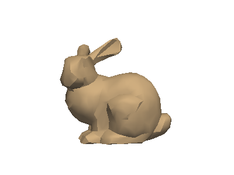 Visualize specular power at
128.0.>>> prop.specular_power = 128.0 >>> prop.plot()
- property style: str#
Return or set Visualization style of the mesh.
One of the following (case insensitive):
'surface''wireframe''points'
Examples
Set the representation style to
'Wireframe'>>> import pyvista as pv >>> prop = pv.Property() >>> prop.style = 'wireframe' >>> prop.style 'Wireframe'
Visualize default surface representation style.
>>> prop.style = 'surface' >>> prop.plot()
Visualize wireframe representation style.
>>> prop.style = 'wireframe' >>> prop.plot()
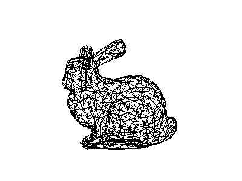 Visualize points representation style.
>>> prop.style = 'points' >>> prop.point_size = 5.0 >>> prop.plot()
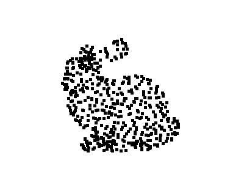